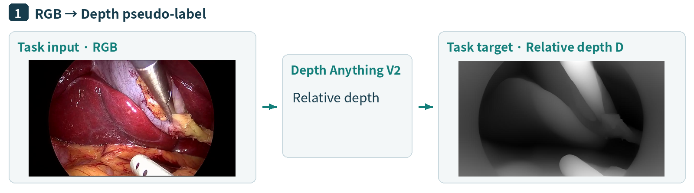

Depth estimation represents the relative depth of instruments and tissue from a single surgical image, supporting spatial perception and geometric modeling. Its output describes relative depth, not distance in physical units.
Input and output: An RGB surgical image → an aligned, single-channel relative depth map.
Source data and labels: An RGB surgical frame. Depth supervision is added as a model-produced pseudo-label, rather than a sensor measurement.
Construction method: Following the published pipeline, Depth Anything V2 produces relative depth D from RGB. The image is the task input and D is the target, with matching field of view and pixel alignment.

Figure 1. The RGB image and corresponding depth pseudo-label form a supervised pair.
Example instruction: Estimate the relative depth of the RGB image on the left and output a single-channel depth map.
Target output: The aligned relative depth map on the right.